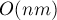
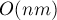

MAXimal
добавлено: 10 Jun 2008 23:07
редактировано: 31 Aug 2011 21:57
Содержание [скрыть]
Рёберная связность. Свойства и нахождение
Определение
Пусть дан неориентированный граф  с
с  вершинами и
вершинами и  рёбрами.
рёбрами.
Рёберной связностью  графа называется наименьшее число рёбер, которое нужно удалить, чтобы граф перестал быть связным.
графа называется наименьшее число рёбер, которое нужно удалить, чтобы граф перестал быть связным.
Например, для несвязного графа рёберная связность равна нулю. Для связного графа с единственным мостом рёберная связность равна единице.
Говорят, что множество  рёбер разделяет вершины
рёбер разделяет вершины  и
и  , если при удалении этих рёбер из графа вершины
, если при удалении этих рёбер из графа вершины  и
и  оказываются в разных компонентах связности.
оказываются в разных компонентах связности.
Ясно, что рёберная связность графа равна минимуму от наименьшего числа рёбер, разделяющих две вершины и , взятому среди всевозможных пар  .
.
Свойства
Соотношение Уитни
Соотношение Уитни (Whitney) (1932 г.) между рёберной связностью , вершинной связностью  и наименьшей из степеней вершин :
и наименьшей из степеней вершин :

Докажем это утверждение.
Докажем сначала первое неравенство:  . Рассмотрим этот набор из рёбер, делающих граф несвязным. Если мы возьмём от каждого из этих ребёр по одному концу (любому из двух) и удалим из графа, то тем самым с помощью
. Рассмотрим этот набор из рёбер, делающих граф несвязным. Если мы возьмём от каждого из этих ребёр по одному концу (любому из двух) и удалим из графа, то тем самым с помощью  удалённых вершин (поскольку одна и та же вершина могла встретиться дважды) мы сделаем граф несвязным. Таким образом, .
удалённых вершин (поскольку одна и та же вершина могла встретиться дважды) мы сделаем граф несвязным. Таким образом, .
Докажем второе неравенство:  . Рассмотрим вершину минимальной степени, тогда мы можем удалить все смежных с ней рёбер и тем самым отделить эту вершину от всего остального графа. Следовательно, .
. Рассмотрим вершину минимальной степени, тогда мы можем удалить все смежных с ней рёбер и тем самым отделить эту вершину от всего остального графа. Следовательно, .
Интересно, что неравенство Уитни нельзя улучшить: т.е. для любых троек чисел, удовлетворяющих этому неравенству, существует хотя бы один соответствующий граф. См. задачу "Построение графа с указанными величинами вершинной и рёберной связностей и наименьшей из степеней вершин".
Теорема Форда-Фалкерсона
Теорема Форда-Фалкерсона (1956 г.):
Для любых двух вершин наибольшее число рёберно-непересекающихся цепей, соединяющих их, равно наименьшему числу рёбер, разделяющих эти вершины.
Нахождение рёберной связности
Простой алгоритм на основе поиска максимального потока
Этот способ основан на теореме Форда-Фалекрсона.
Мы должны перебрать все пары вершин , и между каждой парой найти наибольшее число непересекающихся по рёбрам путей. Эту величину можно найти с помощью алгоритма максимального потока: мы делаем истоком, — стоком, а пропускную способность каждого ребра кладём равной 1.
Таким образом, псевдокод алгоритма таков:
int ans = INF; for (int s=0; s<n; ++s) for (int t=s+1; t<n; ++t) { int flow = ... величина максимального потока из s в t ... ans = min (ans, flow); }
Асимптотика алгоритма при использовании \edmonds_karp{алгоритма Эдмондса-Карпа нахождения максимального потока} получается , однако следует заметить, что скрытая в асимптотике константа весьма мала, поскольку практически невозможно создать такой граф, чтобы алгоритм нахождения максимального потока работал медленно сразу при всех стоках и истоках.
Особенно быстро такой алгоритм будет работать на случайных графах.
Специальный алгоритм
Используя потоковую терминологию, данная задача — это задача поиска глобального минимального разреза.
Для её решения разработаны специальные алгоритмы. На данном сайте представлен один из которых — алгоритм Штор-Вагнера, работающий за время  или .
или .
Литература
- Hassler Whitney. Congruent Graphs and the Connectivity of Graphs [1932]
- Фрэнк Харари. Теория графов [2003]